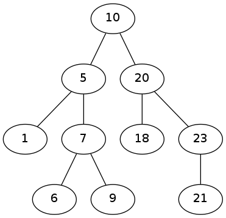

On va maintenant utiliser des arbres binaires pour réaliser le tri
d'un ensemble de données. On va considérer que l'on dispose d'une
liste de nombres à trier. On va construire un arbre ayant certaine
propriété ; une fois construit adéquatement, la liste des nombres
triée sera obtenu en parcourant l'arbre.
Plus précisément, on va écrire une fonction qui ajoute un élément à un
arbre, dans une nouvelle feuille de la manière suivante : soit v
la valeur à ajouter, on commence le parcours à la racine de l'arbre
déjà construit qui est désigné par l'expression « nœud
courant » :
L'arbre ainsi construit est
un arbre
binaire de recherche (ABR).
On reprend la définition de la classe arbre binaire vue au TP précédent. Le fait que l'arbre soit un ABR n'est pas visible dans la définition de la classe. C'est par construction que c'est un ABR. Aussi, l'ajout d'une valeur dans l'arbre doit-il être réalisé pour garantir que l'on respecte bien la propriété des ABR.
def ajouteABR (self, v):
if v == self. etiquette:
self. decompte = self. decompte + 1
elif v < self. etiquette:
if self. fg == None:
self. fg = Arbre (valeur = v)
else:
self. fg. ajouteABR (v)
else:
if self. fd == None:
self. fd = Arbre (valeur = v)
else:
self. fd. ajouteABR (v)
def construitABR (liste):
first = True
for valeur in liste:
if first:
abr = Arbre (valeur = int (valeur))
first = False
else:
abr. ajouteABR (int (valeur))
return (abr)
(attention à l'indentation : ajouteABR() est une méthode dans la classe Arbre alors que construitABR() est une fonction.)
On ajoute les lignes suivantes pour obtenir l'ABR à partir du fichier contenant 100 nombres :
f = open ("100.nombres", "r")
liste = f.readlines()
abr = construitABR (liste)
f.close ()
Une fois construit, on parcourt l'arbre en commençant à la racine et en effectuant le traitement récursif suivant en chaque nœud :
Avec ces 4 fichiers de données, on obtient les ABR suivant :
Quelques méthodes d'instance à implanter :
def presentDansABR (self, v):
if v == self.etiquette:
return (True)
if v < self.etiquette:
if self.fg != None:
return (self.fg.presentDansABR (v))
else:
return (False)
elif self.fd != None:
return (self.fd.presentDansABR (v))
return (False)
Question à résoudre sur le papier, sans utiliser l'ordinateur :
Il existe différentes manières de parcourir un arbre binaire. 3 manières sont particulièrement utiles et faciles à programmer récursivement. Elles se distinguent par le moment où l'étiquette du nœud est parcourue : avant les fils, après les fils, entre fils gauche et fils droit.
À quel parcours correspond le parcours d'un ABR pour obtenir la liste des valeurs triée de manière croissante ?
On veut tester si deux ABR sont égaux. Cette égalité de deux ABR peut avoir plusieurs sens :
Écrire une méthode egal (self, o) qui détermine si les deux arbres ont la même structure (sens 2 ci-dessus).
On utilisera la méthode isinstance (o, Arbre) qui renvoie True si l'object o est une instance de la classe Arbre, ou False sinon.
Note : isinstance (...) doit être utilisé systématiquement pour tester la classe des objets passés en paramètre pour être certain que les opérations qui sont faites dans la méthode sont légitimes.
Écrire une méthode memeContenu (self, o) qui détermine si les deux arbres contiennent les mêmes étiquettes (sens 1 ci-dessus).
On veut parcourir l'ABR par niveau. Par exemple, pour cet ABR

les nœuds sont parcourus dans l'ordre suivant : 10, 5, 20, 1, 7, 18, 23, 6, 9, 21.
Écrire une méthode d'instance qui produit ce parcours.
(Aide : n'essayez pas de le faire de manière récursive.)
{kind=link}
{kind=link}
{kind=link}
{kind=link}